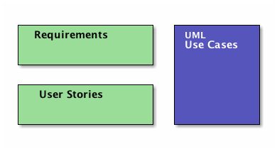
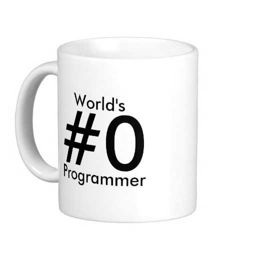

Software Design Courses
PA1415, PA1435
1 Sprint: Requirements Engineering
1.1 About This Sprint
This sprint briefly introduces the topic requirements engineering. It is primarily targeted at PA1415 Software Design.
For more information on this topic, see e.g. the course PA1412 Praktisk Kravhantering.
Note: In this sprint you will begin with what will eventually be delivered as a part of Assignment 1. In subsequent sprints you will continue with what you produce here and dive deeper into UML. You will thus only produce a partial delivery in this sprint.
1.2 User Stories covered in this Sprint
- As a requirements engineer I want to know who may have requirements on the system we are building so that I can make sure that all needs are met.
- As a requirements engineer I want to have a range of methods for finding requirements so that I can choose the best method for each person or source of requirements.
- As a requirements engineer I want to document the found requirements so that I can discuss them with the customer.
- As a requirements engineer I want to document the found requirements so that I can communicate them to the developers.
- As a project manager I need to decide what to focus on building right now so that I best satisfy all customers’ expectations.
1.3 Introduction
Before you start designing your system, you need to find out what to design and build. There are of course different ways of doing this. The traditional way advocates that you need to fully understand the entire system before you go ahead with the design (cf. waterfall development), whereas at the other end the agile approach (e.g. as advocated by eXtreme Programming and the Agile Manifesto) is that you should only do as much requirements engineering up front as is necessary to understand how to start building, since the requirements are going to change anyway. Note that they do not say “Don’t do it!”; they say “Do as little as possible, but not less”.
It is thus important to decide early how much requirements engineering you should do before you start with the project. Incidentally, there is a difference between the traditional, so called bespoke requirements engineering where you start a project when a customer knocks on the door and then you do requirements engineering as part of that project, and the continuous requirements engineering where you always do requirements engineering and spawn new development projects as a result of the requirements engineering process. The latter suits the type of products that you develop and sell to more than one customer, while the former is more suitable for one-off projects. For this course, I would suggest a pragmatic approach (akin to the agile way): Do as much requirements engineering so that you have a rough overview of what the system should do, and do proper requirements engineering on what you need to know do make a Minimum Viable Product.
There are many sources and techniques for doing requirements elicitation (i.e., finding the requirements), from reading the old documentation, analysing competitor’s products, interviewing users, running surveys among user groups, or simply inventing the requirements yourself. If you do requirements engineering you will be using a mixture of these. Typically, you will start by doing an unstructured interview with a manager to get a broad overview of what they want the system to do. You will then try to define end user groups and find a couple of representative persons from each user group and conduct further interviews with them. At first, these interviews will be exploratory and unstructured, but will pretty soon become semi-structured as you learn about the major features of the system, so that you will be getting further details about each of these major features.
Finding out who may have an interest in the system (a stakeholder) is so important that I have even added a separate user story for it in this sprint. This is not limited to end-users. Other stakeholders may include (but is not limited to): the organisation that is going to maintain and continue development of the system, system service technicians that will be doing backups and adding users and other running maintenance, external parties that you may connect to (for example banks to deal with payments), legal texts (that’s right: a text can be a stakeholder), other departments in the organisation you build for that require your system to jack in with their processes, and so on.

Figure 1: Requirements Engineering Overview (Simplified)
1.3.1 Interviews
I’ve already touched upon elicitation techniques. The one you are likely to use the most is Interviews. “Interview” is actually a cover-all phrase that encompasses a whole range of different techniques that involves two people or more with (at least) voice contact. You may thus do interviews over phone, but I would not recommend it since you loose a lot of nuances that can be learnt by observing body language. Video conference or face-to-face meetings IRL are the most common interview settings. You can be one person interviewing one other person, or there can be more people either doing the interview or being interviewed (although at some point it is perhaps better to run the meeting as a focus group).
In its most simple form, you conduct the interview as an open interview with open answers. In this setting, you basically just talk, and together explore what the application should do. You rarely have the luxury to be this unstructured, even in the first interview. I would recommend you to do as much homework as possible beforehand so that you have at least a small set of starting questions that you can use to get the interview going and to get back on track when you feel that you have diverged too far from the interview goals. Having a set of questions moves the interview into a semi-structured format, where you are able to follow up on the answers given with further impromptu questions. The extreme is a structured interview where you have a specific set of questions that you want answered in a particular order without room for any further probing. This is typically only used in research contexts.
Similarly, you can allow open answers, typically early on when you want to explore and look for new information, or you can restrict the answers to a closed answer space, where each question can e.g. be answered with one of four alternatives. This is good for confirming what you have previously learnt; you can collect answers from larger groups of people and quickly analyse them, and the idea is that at that stage you should not expect to find any new information.
Thus, a requirements engineer will probably use semi-structured open answered interviews. In this course, however, this will not be the case as it would be out of scope for the course. You will instead have to create the requirements yourself (more on this under the Experiential Learning in this sprint).
How you behave during an interview influences the results, because your behaviour can make the interview subjects more or less prone to answer your questions. In Table 1 I have compiled a list of do’s and don’ts in interview situations (we have actually used this list to assess requirements elicitation interviews in the requirements engineering courses at BTH).
| Do | Don’t |
|---|---|
| Do prepare thoroughly for the meeting | Don’t put your laptop on the table as a wall between you and your client |
| Do prepare a checklist for the meeting | Don’t keep your cap on your head |
| Do introduce yourself properly | Don’t interrupt the customer |
| Do ask about access to stakeholders | Don’t interrupt each other |
| Do ask about access to previous systems | Don’t take no notes |
| Do book the next meeting | Don’t record the interview without asking |
| Do ask about quality requirements | Don’t assume stuff |
| Do make sure you know who you are talking to, and why | Don’t provide requirements |
| Do ask about deadlines | Don’t provide goldplating |
| Don’t technobabble | |
| Don’t sit quiet | |
| Don’t kiss up (too much) | |
| Don’t follow your meeting checklist manically | |
| Don’t share war-stories about other customers and systems | |
| Don’t ask about the budget at the first meeting | |
| Don’t argue among yourselves |
1.3.2 Specification
Once you have found the requirements, your next step (after analysing them and negotiating them with the customer, but that is also outside the scope of this course) is to Specify the requirements. There is an IEEE standard, IEEE 830, for how to structure your requirements document, assuming you specify requirements in the traditional way. The good thing about this is that it has existed for many years, and people are used to seeing it and signing contract based on it. The bad thing about it is that it is not as well known or easy to understand as requirements engineering researchers would like to think it is, and with a few moments of education I am certain that you will be able to educate your customers on any document and requirements format you choose.
IEEE 830 Standard for Software Requirements Specifications
- Introduction
- Purpose of the Requirements Document
- Scope of the Product
- Definitions, Acronyms, and Abbreviations
- References
- Overview of the Remainder of the Document
- General Description
- Product Perspective
- Product Functions
- User Characteristics
- General Constraints
- Assumptions and Dependencies
- Specific Requirements Functional, non-functional, and interface requirements
- Appendices
- Index
To simplify, there are two plus one ways of writing requirements. The two ways are traditional requirements and user stories. The plus one way is UML use cases. UML:ists themselves claim that use cases are not requirments, they are merely scenarios where one or several requirements are “exercised”. I would rather avoid re-formatting the requirements once more and just add more documentation that will only be used once, so I would try very hard to get away with only documenting the requirements within the context of a use case if I must use them.

Figure 2: Two plus one way of specifying requirements
Traditional requirements may be specified as figures, tables, sketches, or plaintext, with the plaintext version being the one most commonly discussed. They usually follow a standardised format with a number of attributes per requirement (title, description, source, date, etc.), and a standardised template for the actual requirement. User Stories are supposed to be less documentation so they try to include the most relevant of all of this information into a single one-liner. Shorter iterations, a more direct path from inception to implementation, and closer collaboration with the customer makes it easier to do away with a lot of the information considered necessary in traditional requirements.
UML use cases are covered in a different course sprint, so I will only briefly mention them here. With a use case, you are attempting to put the requirements into a context. Of course, this means that you need to write more, since you also need to add information about the context. This is one of the reasons why they are not considered requirements – they are simply too verbose. This verbosity also means that a developer is unlikely to do use cases for every requirement and every part of the system; but will rather do them for those parts of the system where there is a usage flow that is difficult to grasp in one sentence, and where you are likely to hold a “conversation” with the system to fulfill a higher need. For example, searching for a hotel room is a one-liner. Booking a room on the other hand may involve
- a search
- a narrowing of the results to specific types of rooms
- a check whether the room is available
- a selection of the room
- input of information about the person booking the room, and
- a confirmation that the room is booked.
Each of these items may, in turn, comprise more than several requirements, including at least one requirement that restricts the order in which these actions must be performed.
1.3.3 Prioritisation

So, which requirement should you focus on developing first?
In traditional requirements engineering, there is a whole phase solely dedicated to requirements prioritisation. Agile software development methodologies (such as Scrum) also assumes that you always have your user stories prioritised in your backlog. Essentially, you are doing insertion sort whenever you add a new user story, while also checking that the priority of the existing items do not change as a result of adding the new user story. Each sprint begins with a review of the backlog, before you select among the top prioritised user stories which you should develop in the sprint. If the user story is really big (called an epic), one of the actions you may do is to break it down into more manageable user stories and put these into the backlog.
This, of course, does not answer the question since it only explains how you decide, but not on what grounds. Also here, you can probably build a research career on deciding which factors should influence your prioritisation (see, for example, Ruhe and Saliu’s paper “The art and Science of Release Planning” 1), but a few good starting points are:
- Value for the customer
- Cost of implementation (Cost and Value can be nicely combined as e.g. Karlsson and Ryan 2 shows).
- Penalty for not implementing
UML/RUP would advocate that you wait with prioritising your requirements and instead prioritise the UML use cases, so that you deliver the most important features first. This does not mean that you need to implement the full flow of events in one go; always keep the Minimum Viable Product in mind.
1.3.4 Summary
Requirements Engineering is a big topic, and can be quite complex. The introduction above is just meant to get you started. I have, for example, only touched upon the difference between bespoke and market-driven requirements engineering. I have not mentioned any of the challenges involved when you do large scale requirements engineering or very large scale requirements engineering. Nor have I gone through all the different techniques available for eliciting requirements, checklists for analysis, requirements verification, etc. etc. You will get some more information about some of these things in the screencast “Requirements Engineering”, and for the rest I direct you towards one of the requirements engineering courses offered at BTH.
I include some of the UML Use Case learning material in this sprint which will give you a head start for the next sprint, but the focus on what you are expected to do is “traditional” requirements engineering.
A note also about elicitation techniques: I say earlier that you are most likely going to use interviews. Well… In this course that’s not quite true. In this course you are going to create the requirements yourself, based on a brief system description.
1.4 Learning Material
1.4.1 Book Chapters
- C. Larman, “Applying UML and Patterns”, 3d Edition: Chapters 4,5,6, and 7.
- Inception is Not the Requirements Phase
- Evolutionary Requirements
- Use Cases
- Other Requirements
1.4.2 Screencasts
1.5 Experiential Learning
1.5.1 Sprint Test Plan
Go through the user stories for this sprint and make sure you have a clear understanding of how to solve each of them.
Revisit and update your risks and contingencies section.
Add and/or revise the following items to your glossary:
- Requirements Engineering
- Requirements Elicitation
- Stakeholders
- Software Requirements Specification (SRS)
- RFC 2119
- Requirements Prioritisation
- Quality Attribute (Also: Non-functional Requirement)
- User Story
- Epic
- Backlog
- Acceptance Test
- Use Case
Make sure you understand what each item is, the notation for them, and how to use them either in isolation or together with the other concepts.
1.5.2 Self-Study: Requirements Interview
Let’s say you are going to build a student simulator. As a part of this you need to find out the morning practices of a typical student.
Interiew a couple of student colleagues on what they do in the mornings. Try to plan beforehand, and have your colleague assess what you do good and what you can improve during the interview.
1.5.3 Self-Study: Requirements Specification
Try to write down a common process for what you elicited above, i.e. the “getting up, getting ready, and getting to uni in the morning”-process.
Express this process as:
- regular requirements (consider their apartment, their mother, the bus, etc. as part of “the system”)
- user stories (think about the role they have for each part, and the motivation for why they want something done)
- use cases (consider their apartment, their mother, the bus, etc. as part of “the system”)
1.5.4 Assignment Submission: Requirements Document
Your main task is to write user stories based on the system description for the assignments.
Tasks
- Describe the system in terms of the most important workflows, as “epics”. Add conditions of satisfaction to each epic.
- List the epics in order of importance, and add a brief motivation for why you have ordered them the way you have.
- Take the three most important epics, and break them down to more manageable user stories. Add conditions of satisfaction to the user stories. Order them according to priority, and add a brief motivation.
Document Structure:
- Title Page
- Title: “User Stories for System: <system name>”
- Sub-title: “Assignment in the course PA1415 Software Design”
- Date
Authors and Author Contribution
Add a table with all authors, their social security numbers, and the share in percent that the author has contributed in thinking (discussing, reasoning, etc.) and in actually writing the submitted assignment document.
Author Name Social Security Number Thinking Writing
System Description
A brief description (2-3 paragraphs) of your interpretation of what the goal of the system is.
- High-level Epics
- Motivation for Priority
- Epics (ordered most important first)
- User Stories
- Motivation for Priority
- User Stories and Epics (ordered most important first)
- References
Please note that the “User Stories and Epics” shall include both the remaining epics from section 3 in the document and the broken down user stories.
Please also note that the user stories from the epics that you break down will probably be interlaced; the least important user stories from the top-most epic need not be more important than the most important user stories from the second epic. You will thus have to review the priorities of all user stories against all other user stories and epics.
Also also note, when you go forward you will want each user story to have a unique ID so that you can refer back to them.
Commit and push this document to your project repository.
Conditions of Satisfaction
When marking this part of the assignment we are looking for the following:
- Does the title page contain a table with authors and author contribution
- Size of assignment: Are there 5-10 epics and 10-30 user stories?
- Is there a significant difference in scope between the epics and the user stories?
- Are the epics and user stories well formed (including actor, goal, and reason)?
- Are there relevant conditions of satisfaction for each user story/epic?
- Is there a reasonable motivation for the priorities of the epics and user stories?
- Does the prioritisation actually follow the motivation?
1.5.5 Update Course Backlog
How do you translate your user stories into UML use cases? How do you use the prioritised order to decide on a development schedule? Why are you specifying your requirements first as user stories if you are then going to re-specify them as UML use cases immediately afterwards?
What other means are there for eliciting requirements? How may you gain experience in using them?
Are there any other questions that you want answered? Add them, along with a brief strategy for how to find an answer.
1.6 Sprint Acceptance Tests
You are done with this sprint when:
- You have read the Learning Materials.
- You have created your requirements document and submitted it.
You may also have
- Updated your Sprint Test Plan
- Updated your Course Backlog
- Performed self-study requirements interviews
- Documented the results from the self-study interviews in different formats.
2 Sprint: Use Cases and Use Case Diagrams
2.1 About This Sprint
This sprint introduces UML use cases and UML use case diagrams as a means of putting requirements into a context and understanding the interactions between users and the system.
2.2 User Stories covered in this Sprint
- As a software designer I want to document what the customer is telling me so that I can discuss my understanding of their requirements with them.
- As a software designer I want to document what the customer is telling me so that I can easily continue designing based on a joint understanding.
- As a software designer I want to be able to reuse common procedures between my use cases so that I only have to maintain them in one place.
- As a project manager I need to decide what to focus on building right now so that I best satisfy all customers’ expectations.
- As a product manager I want to make sure that we are building software of high quality.
2.3 Introduction
UML use cases is the first step into Object-Oriented Analysis, according to RUP. The core of a use case is a small set of attributes (name, involved actors, brief description, main course of events, alternative flows). Depending on which version of the course book (Larman) you have you may extend this set with more attributes, and they will have different names (for example Brief (or high-level) use cases and fully dressed (or expanded) use cases) depending on how much information you provide. Outside of this course, it is not important what you call the attributes, or what you call the use cases themselves. What is important, though, is that you establish an order in which to work with the use cases, and that you decide on one standardised format – at least for your project, but preferrably for your organisation – since this simplifies both readability and the creation of the use cases.
An Example of a Use Case
- Use Case
- Order Ice Cream
- Actors
- Kid, Ice Cream Man
- Description
- A kid arrives at the ice cream truck and orders an ice cream. The Ice Cream Man delivers the ice cream, and informes the kid about the price. The kid pays and eats their ice cream.
- Main Course of Events
Actor System 1. A kid arrives at the ice cream truck 2. The system informs about available choices 3. The kid orders an ice cream 4. The system prepares the ice cream and informs about the price 5. The ice cream man delivers the ice cream. 6. The kid pays. 7. The ice cream man enters the payment into the system. 8. The system gives change on the paid amount. - Alternative Flow of Events
- 6. The kid eats the ice cream and gets sucked into the ice cream van and turned into more ice cream.
The usefulness of use cases lies in that you put a bunch of requirements into a working scenario. A scenario is easier for both the end-users and for the developers to understand. Rather than having to go through all possible alternative branches and edge cases, you focus on describing one instance of interacting with the system. In the example above, it is not “any kid” that arrives at “any ice cream truck”. It is one specific kid (Let’s call him Bob) arriving at one specific ice cream truck, at one particular time. Yes, we do take some shortcuts by saying that the kid orders “an ice cream” instead of “a vanilla ice cream” in order to simplify a bit, but initially we try to avoid anything that may create branches in the main course of events. When we iterate the use case we may see that there are alternative flows to cover (like the surprise twist in the example).
It is also important to remember that the main course of events should describe a positive flow, i.e. a flow where the operation succeeds and everyone leaves the use case happily. All the negative flows (for example, the kid does not have enough cash, the ice cream man is out of voodoo dolls, etc.) should be covered as alternative flows.
2.3.1 Use Cases as Test Cases
As a developer, you may use this use case straight off as a test case for the system. Find Bob, put him in front of the ice cream truck, and tell him to order an ice cream. If you are able to execute the use case as specified, you have a passing test case. You are of course not done with your tests here, since the use case is not complete. If you think about it, you may select different flavours of ice cream, you may ask for one or several scoops of ice cream, you can ask for a cone or a cup, you can pay with cash or card, and so on. All of these choices ought to be covered in the use case and the corresponding test cases. You may also pay up-front or after delivery, but this may be better represented as two separate use cases.
2.3.2 Use Cases and Business Requirements
Take the use case above. Now quickly tell me which business requirements that are involved.
Do the reverse. Take a requirement. Quickly tell me which use cases this requirement is realised in.
You can’t, can you? This is one of the downsides of use cases if we “do things by the book”. All is not lost, however. It is relatively easy to augment the use case format to cover for these two situations.
The quickest is to add one attribute “Dependencies” (or “Relevant Requirements”, or whatever you wish to name it) and simply list all requirements that you are using in the use case. The downside to this approach is that you do not know how the requirements are involved. Let’s say that you have a requirement that /“As a customer I want to know if there are any nuts in the ice cream because I am allergic to hazelnuts”/. When should this requirement be used? When the system informs about the available choices? When the kid orders the ice cream? When the kid has already payed?
Another option is to add a column to the main course of events instead:
| Actor | System | Business Requirements |
|---|---|---|
| 1. A kid arrives at the ice cream truck | ||
| 2. The system informs about available choices | BR1: “As a customer I want to know what choices are available because I don’t like vanilla” | |
| BR2: “As a customer I want to know if there are any nuts in the ice cream because I am allergic to hazelnuts” | ||
| Note: Also list lactose, gluten etc. | ||
| 3. The kid orders an ice cream | BR3: “As a customer I want to order a particular flavour of ice cream so that I can get the ice cream I like.” | |
| 4. The system prepares the ice cream and informs about the price | BR4: “As an ice cream man I want to get payed before I deliver the ice cream to avoid them pesky kids running away without paying” | |
| 5. The ice cream man delivers the ice cream. | ||
| 6. The kid pays. | ||
| 7. The ice cream man enters the pay into the system. | ||
| 8. The system gives change on the paid amount. |
Of course, this is more difficult to index (but only slightly and it is easily programmed). You also need not write the entire requirement in the Business Requirements column – just the requirement’s ID. You may think that for a larger system, this kind of cross-referencing may become difficult because you need to have a pretty firm grasp of the entire requirement’s database in order to be able to identify the relevant requirements. However, you would then be assuming (a) that all requirements engineering is done before analysis/design in a waterfall methodology, (b) that you could write the use case without this awareness, and (c) that you cannot add requirements to the use case later and alter the main course of events accordingly. Neither of these are true.
You may wonder why you should link use cases and requirements at all? Simply because you are not following a strict waterfall development methodology in a one-off development. When a requirement changes you want to be able to quickly find out where you have designed and implemented the requirement, and when you are implementing the use case you may have more questions, or you may have different idea of how to solve the problem, and then you need to check what was actually stated in the requirement (and who stated it so you can talk to them about it).
2.3.3 Use Cases and Quality Attributes
Another issue that is not included in the default use cases are quality attributes. I suppose you could add it in the regular use case, so that every system response has a subordinate clause specifying the quality constraints. But why not re-use the idea suggested above. Quality requirements are – once specified – just ordinary requirements, so you can add them in the “Business Requirements” column for every system response. This makes it easy to add several quality constraints on each system response. Even better, you do not need to have the same quality constraints on the entire use case. For example, presenting the list of ice cream flavours MUST be done within two seconds, but accepting a credit card payment MAY take up to five seconds.
2.3.4 Use Case Diagrams
Roughly (and don’t hold me to this, because there are many situations where this is not true) there will be one use case per feature in the system, for a loose definition of feature. (There, did I weasel out that sentence sufficiently to not say anything meaningful?)
This means that there may be quite a lot of use cases, and it may become difficult to get an overview of them if all you have are their textual form. Use Case Diagrams are the UML answer, with the intention of visually clearing up:
- What the boundaries are of the system(s) (to which system does which use case belong)
- What actors are involved for each system and in each use case
- What use cases there are in each system
- What relationships there are between use cases, between use cases and actors, and betwen systems.
2.3.5 Use Case Reuse
When doing larger use cases, you may encounter smaller pieces of processes that are needed by the big use case but are not really dealing with the same problem. For example, what does money and payment have to do with ordering ice-cream (my kids struggle with this one too). There may be alternative ways of doing something, where each way in turn has a number of sub-steps. In order to keep the main use case clean and focused on one problem, and in order to create reusable bits of processes, you can break out behaviour from the main use case into sub-use-cases.

Figure 5: Example of a Use Case Diagram where the BuyItems use case includes CashPayment, CheckPayment, and CreditPayment.
2.3.6 Use Case Prioritisation
Prioritising use cases is at first no different than prioritising requirements or user stories, the difference is that it is the first UML artefact available for you to prioritise. The ground rule is:
First implement use cases that significantly influence the core system architecture.
This is pretty much the same advice as you would get in Agile development methodologies, with their focus on a Minimum Viable Product (MVP). The question is, of course, what does “significantly influence” mean? Larman suggests a few guidelines for what may increase the ranking of a use case:
Increase the ranking of a use case if it
- has direct impact on architectural design
- example: adds classes to domain layer, require persistent services
- includes risky, time-critical, complex functions
- involves new research or technology
- represents primary business processes
- directly supports revenue or decreased costs
Also remember that you need not implement a use case completely in one iteration. The Minimum Viable Product in the ice cream example is, for example, to get a selection of ice creams and order one. Payment (and authentication etc. etc.) is not part of the MVP, so you can wait with this until a later iteration. If you look at the involved business requirements, this may make more sense to you.
2.3.7 Story Points
I think it is time I introduce another agile concept, namely that of Story Points. You will need this because once you have ranked your use cases, user stories, or requirements, you need a way to determine how much you should commit to in the sprint you are planning for.
Decide on a unit. This may be “hours to develop”, “Buckazoids”, “pieces of eight”, or just plain and simple “Story points”. Take the first item to estimate from your backlog and agree how many story points it is worth. With this as a base, you then have a relative point that you can assess the remainder of your items against (“Is it more or less than item #1? How much more? Twice? Thrice?”). A common advice is to use a series of possible values for how many story points an item may get. Commonly suggested is to use the fibonacci sequence (1, 2, 3, 5, 8, 13, 21, 34, 45) since it climbs quickly.
You will never use the story points outside your team, so it does not matter that they are not absolute. Inside your team, you will use them to measure velocity, i.e. “how many story points do you complete per week”. First, you now have a nice measure of whether everything is ok in your team and in your product, if you are completing as many story points per week as you usually do (your average velocity). Second, you have a means with which to plan your iterations. If you know that your average velocity is X per week with a confidence interval of +/- 10% and your sprint is planned to last for Y weeks, then you know you will at least be able to commit to 0.9X * Y story points in your sprint. Your manager will probably not be happy about this because they expect more from you. So you get closer to the upper bound 1.1X * Y instead, and this makes the manager unhappy when you fail to meet your goal. I can’t teach you how best to placate your manager, but this will at least give you an idea of which ballpark you have to play in.
Of course, when you split up a UML use case into parts that can be implemented in separate iterations, you need to estimate the story points for each part. Good luck!
2.4 Learning Material
2.4.1 Book Chapters
- C. Larman, “Applying UML and Patterns”, 3d Edition: Chapters 4, 5, 6, 7, 21, 30
- Inception is Not the Requirements Phase
- Evolutionary Requirements
- Use Cases
- Other Requirements
- Test Driven Development and Refactoring
- Relating Use Cases
2.4.2 Screencasts
2.5 Experiential Learning
2.5.1 Sprint Test Plan
Go through the user stories for this sprint and make sure you have a clear understanding of how to solve each of them.
Revisit and update your risks and contingencies section.
Add and/or revise the following items to your glossary:
- Use Case
- Use Case Diagram
- Sub Use Case
- Test Case
- Quality Attribute
- Quality Aspect
- Quality Requirement
- Quality Constraint
- Minimum Viable Product (MVP) 3
- Story Points
- Velocity
Make sure you understand what each item is, the notation for them, and how to use them either in isolation or together with the other concepts.
2.5.2 Self-Study: Use Cases
Take a system that you are familiar with. List the use cases in this system in a Use Case Diagram, along with the actors involved. Pick a couple of use cases that requires you to interact with the system in several steps and complete the use cases with a “main course of events”. Think about alternative flows and add them too.
Remember that all actors are not visible. For example, in a messaging application you would have both sender, recipient, and possibly forwarding agent as actors.
2.5.3 Self-Study: Planning
Gather your team. Decide on a system that you want to plan (for example, the system that you just listed the use cases for), and engage in a game of Planning Poker to estimate the sizes of all the use cases.
Give your use cases a rough priority, e.g. using the MOSCoW method, and see if you can divide your thusly created backlog into reasonably sized sprints.
2.5.4 Assignment Submission: Use Case Overview
PA1415 Software Design: In this part of the assignment you will continue with the requirements document that you have already created and transform your user stories into UML use cases.
PA1435 Object Oriented Design: In this part of the assignment you will write UML use cases based on the system description for the assignments.
Tasks:
- Create a Use Case Diagram
- Identify all actors that are interacting with the system.
- Identify all use cases of the system (features).
- Identify which actors are involved in each use case.
- Identify any other relations between the use cases.
- Briefly describe the actors in a dictionary.
- Describe the use cases in a high-level description, containing:
- Use Case Name
- Primary Actor
- Brief Description
- For students of PA1415 Software Design, link your user stories to the relevant use cases by adding an attribute:
- Concerned User Stories
Document Structure:
- Title Page
- Title: “Overview of Use Cases for System: <system name>”
- Sub-title: “Assignment in the course <course code><course name>”
- Date
Authors and Author Contribution
Add a table with all authors, their social security numbers, and the share in percent that the author has contributed in thinking (discussing, reasoning, etc.) and in actually writing the submitted assignment document.
Author Name Social Security Number Thinking Writing
System Description
A brief description (2-3 paragraphs) of your interpretation of what the goal of the system is.
- Use Case Diagram
- Description of Actors
- High-Level Use Cases
- References
Commit and push this document to your project repository.
Conditions of Satisfaction
When marking this part of the assignment we are looking for the following:
- Does the title page contain a table with authors and author contribution
- Size of assignment: Are there 15-25 high-level use cases?
- Are all relevant actors identified and described?
- Are all relevant use cases identified and briefly described?
- For each use case, are all the relevant actors linked?
- Is the use case diagram well formed?
- Do all the use cases have all attributes?
- Do all the use cases have unique and good names?
- Do all the use cases have a sufficient and proper description?
- (PA1415) Are the use cases linked to the relevant user stories?
- (PA1415) Are all user stories linked in at least one use case?
2.5.5 Assignment Submission: Implementation Plan
In this part of the assignment you will prioritise your use cases and plan your first sprints.
Tasks:
Order your UML use cases (created above) according to their importance.
PA1415 Software Design Make sure this order corresponds to the prioritised list of user stories that you have created earlier. You do not have to strictly adhere to the priorities of the user stories, but you need to document and motivate any major deviations that you do.
- Motivate your ordering in terms of how this allows you to build a minimum viable product first.
- Assign story points to each use case.
- Decide and motivate how many story points you will have time for in this course (=your first iteration) and per iteration. Set a MAX, a MIN, and an AVERAGE value per iteration.
- Assign your use cases to iterations such that you
- Create a minimum viable product in your first iteration (motivate why which this is the case).
- Have a reasonable amount of story points allocated per iteration, in relation to the MAX, MIN, and AVERAGE values defined.
Document Structure:
- Title Page
- Title: “Implementation Plan for System: <system name>”
- Sub-title: “Assignment in the course <course code><course name>”
- Date
Authors and Author Contribution
Add a table with all authors, their social security numbers, and the share in percent that the author has contributed in thinking (discussing, reasoning, etc.) and in actually writing the submitted assignment document.
Author Name Social Security Number Thinking Writing
System Description
A brief description (2-3 paragraphs) of your interpretation of what the goal of the system is.
- Prioritised List of Use Cases
- Motivation for Priorities
Use Cases
Include: use case name and size in story points. Present the list ordered according to priority (most important first).
Estimated Velocity Per Iteration
Here you list your MAX, MIN, and AVERAGE number of story points that you think you will have time for per iteration. Pay special attention to the first iteration since this is the one you will continue with in the rest of the course.
- Implementation Plan
- Motivation for Implementation Plan
- Iterations and Use Cases
Commit and push this document to your project repository.
Conditions of Satisfaction
When marking this part of the assignment we are looking for the following:
- Does the title page contain a table with authors and author contribution
- Size of assignment: Does the first iteration contain 5-10 use cases?
- Size of (future) assignments: Does the suggested iteration velocity in relation to the size in story points per use case represent a reasonable development speed?
- Is the relative size in story points reasonable for each use case?
- Does the first iteration contain a workable and acceptable Minimum Viable Product?
- Is there a reasonable amount of work (in terms of story points) assigned to each iteration.
- (PA1415) Does the order of implementation of the use cases correspond to the priorities of the involved user stories?
2.5.6 Assignment Submission: Detailed Use Cases for First Iteration
And, finally, you detail the use cases that you are focusing on in the first iteration.
Tasks:
- Extend the use case descriptions for the use cases in your first iteration in your Implementation Plan so that they also contain the following attributes:
- Preconditions
- Main Course of Events (or Main Success Scenario)
- Alternative Flow of Events (or Extensions)
- Special Requirements
Document Structure:
- Title Page
- Title: “Detailed Use Cases for Iteration 1 of System: <system name>”
- Sub-title: “Assignment in the course <course code><course name>”
- Date
Authors and Author Contribution
Add a table with all authors, their social security numbers, and the share in percent that the author has contributed in thinking (discussing, reasoning, etc.) and in actually writing the submitted assignment document.
Author Name Social Security Number Thinking Writing
System Description
A brief description (2-3 paragraphs) of your interpretation of what the goal of the system is.
Detailed Use Cases
List your detailed use cases here.
Commit and push this document to your project repository.
Conditions of Satisfaction
When marking this part of the assignment we are looking for the following:
- Does the title page contain a table with authors and author contribution
- Size of assignment: Are all use cases in the first iteration from the Implementation Plan described?
- Are the preconditions relevant?
- Is it a reasonable main course of events?
- Does the main course of events end successfully?
- Does the alternative flow of events cover the obvious ways in which the use case can fail or take an alternate route?
2.5.7 Assignment Submission
Submit the assignment as one or several PDFs on It’s Learning.
Your submission shall include the following documents:
- (PA1415) User Stories
- Overview of Use Cases
- Implementation Plan
- Detailed Use Cases for First Iteration
2.5.8 Update Course Backlog
How do you design a system from your use cases? What should you look for when you are trying to understand the structure of your system? What about the behaviour of the system?
Are there any other questions that you want answered? Add them, along with a brief strategy for how to find an answer.
2.6 Sprint Acceptance Tests
You are done with this sprint when:
- You have created an “Overview of Use Cases” document
- You have created an “Implementation Plan” document
- You have created a “Detailed Use Cases for First Iteration” document
- You have committed/pushed these documents to your project repository
 You have submitted the documents for marking.
You have submitted the documents for marking.- PA1415 You have also included the “User Stories” document in your submission.
You may also have
- Updated your Sprint Test Plan
- Updated your Course Backlog
- Written self-study Use Cases
- As self-study played planning poker.
Footnotes:
G. Ruhe and M. O. Saliu. The art and science of software release planning. IEEE Software, 22(6):4753, 2005.
J. Karlsson and K. Ryan. A cost-value approach for prioritizing requirements. IEEE Software, 14(5):67 74, 1997.